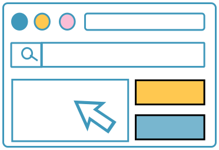
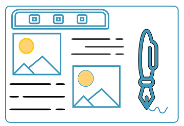
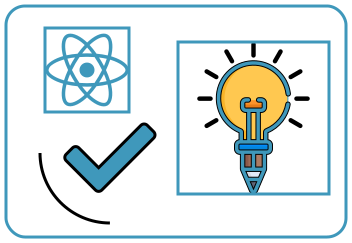
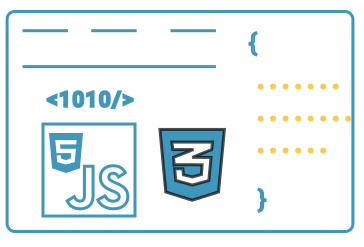
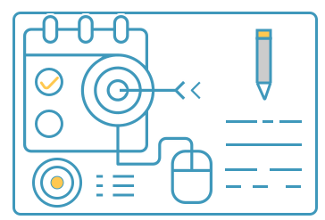

devices_other
Technology Talks
assignment
Web development news
description
Random Talks
card_giftcard
The CSS sub topics are very long. so sometimes it`s hectic and headache to choose right syntext. Here i have mentioned some syntext the quick the process and fasten our work and a link to websites.
Choosing a good and right website template saves a lot of time and and initially i face the same problem.I have mentioned a link to website that provides the free template and paid templates.
The websites that were created 10 years ago no longer support the latest facilities available unless they are updated.The trends in technology is so fast that sometimes within few year, our knowledge become outdated. So we can constantly update ur knowledge bye reading news papers and articles.
Sometime we underestimates our creativity to design the websites the way we wanted it by clients. Let me say this is the lack of resources. And you are in right places, I have mentioned the link to websites that provides videos, audios, images, pdf, books and most of them provide for free.
Here i have included the most intersting Examples that improves our website designs with creativity. i remember at a times i was so much in rush to go for UX/UI design to make awesome websites but there are still underestimate tricks available in css to make website look way better.
The key to show our talents in web development is by converting our knowledge at the speed of light to project is by doing project. No. of project doing patiently is directly proportional to the experience in creating websites.